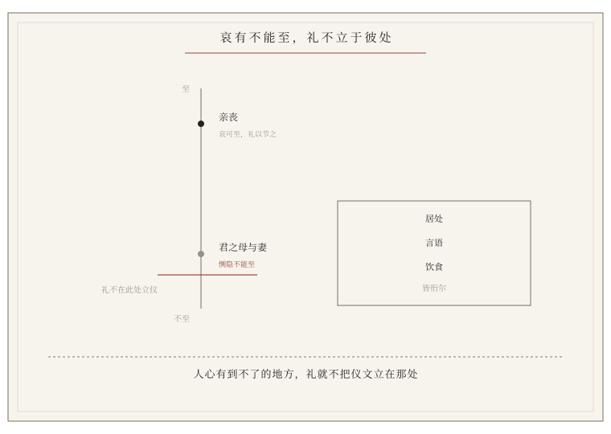

檀弓上 · 三·九十四 · 第 297 课
子夏问诸夫子曰：「居君之母与妻之丧。」「居处、言语、饮食衎尔。」
说什么事：子夏向夫子请教：为君之母、君之妻服丧，该怎样？夫子答：居处、言语、饮食，自得如常。
落在哪一层：为小君之服。论「哀有不能至者，礼许其不至」。
为何编在此位：上二课论「不害人」，此课转入「不勉强」——礼不逼人做出他没有的哀。
【经】子夏問諸夫子曰：「居君之母與妻之喪。」「居處、言語、飲食衎爾。」
【注】衎爾，自得貌。為小君惻隱不能至。
【疏】此一节论臣服小君仪容之事。上子夏问居君之母与妻之丧，此「居处言语」是夫子答辞，不云「子曰」者，记人略也。
君之母 国君之母。或为太后，或为先君之夫人。
君之妻 国君之妻，即夫人。
小君 注「为小君」。春秋时称诸侯之妻为小君，《春秋》书「葬我小君」。
衎尔 注「自得貌」。衎，和乐、宽舒。衎尔，安然自适之状。
居处、言语、饮食 三事。居处谓燕居之所与起居之节；言语谓应对之辞；饮食谓膳羞之数。
惻隐不能至 注语。恻隐，哀痛之心；不能至，谓哀不能到那一步。
子夏向夫子请教：「为君之母、君之妻服丧，该怎样？」夫子说：「居处、言语、饮食，安然如常。」
此节问答极短，但注里有六个字最要紧：惻隐不能至。
礼为君之母、君之妻服丧，有服而无哀。这不是臣子不敬，是哀这件事勉强不来——你没有与她共同生活过，没有受过她的恩，心里生不出那种痛。注说得极老实：惻隐之心不能到那个地方。
礼于是不逼。居处、言语、饮食三事，皆许其如常（衎尔）。不逼你搬去陋室，不逼你少言，不逼你减膳。
这就是礼的分寸：它知道人心有到不了的地方，便不把仪文立在那处。若强行立一条「为小君当哀」，人只能做出哀的样子——而哀一旦是做的，礼就成了表演。
疏另有一句校记：「此『居处言语』是夫子答辞，不云『子曰』者，记人略也。」记礼者省了「子曰」二字，遂使此句读起来像子夏自道。一字之省，主客易位，这正是读古书须留心的处所。
第一层 服与哀可以分离 丧礼之常有二：服（外在的服制）与哀（内在的情）。通常二者相称。此节所示，是二者可以分离的一类情形——有服而无哀，礼仍成立。承认这一点，礼才不至于变成虚伪的机器。
第二层 「不能至」是礼家常用语 注用「不能至」，不用「不当哀」。后者是禁止，前者是承认限度。礼家论人情，多取此语：非不欲，乃不能。这个说法把责任从道德移到了能力，人便不必为做不到的事羞愧，也不必假装做到。
第三层 衎尔的分寸 衎尔是自得，不是放肆。三事如常，是就节文而言：不因小君之丧而改变居处之陋、言语之简、饮食之减。若借此而宴乐，则非衎尔，是慢。此节所许者「如常」，非「加盛」。
第四层 与「为君服」的比较 为国君服，臣有斩衰三年之重；为小君服，礼轻。此节不论服制，只论仪容，说明礼家在轻重之间另有一层考虑：服可依尊卑定，容须依亲疏定。尊卑是名分，亲疏是实感；名分可强制，实感不可。
与今日何干 今人参加与自己无甚关系者的丧礼，常有「不知该不该难过」的窘。此节给的答案是：不必难过，只要不失仪。礼不要求你假装有感情，只要求你别把没有感情当成放肆的理由。
| 左 | 右 |
|---|---|
| 君之母与妻 | 小君 |
| 为小君 | 所服者 |
| 惻隐不能至 | 注之实情 |
| 居处 | 一 |
| 言语 | 二 |
| 饮食 | 三 |
| 衎尔 | 皆如常 |
| 不云子曰 | 记人之略 |
画一处士人燕居之室，视点平视。室中一张矮席，席上置一小几，几上一盏清水、一碟简单的蔬食（两只陶豆）。席旁一位士人正坐（正面、双手置于膝上，衣冠整齐，神色平静）。室之一角设一道素帷，帷后隐约可见一具空榻（只画榻之一端）。不写文字、不画人面细节。赭色只用在几上那盏清水之沿，与素帷的系带。
